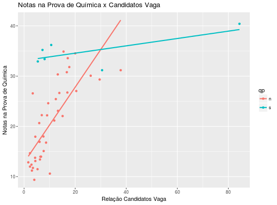
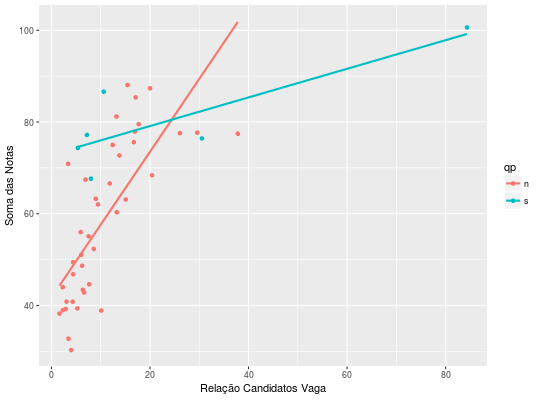

Notas médias de candidatos ao vestibular da Unicamp em 1998.
Um data.frame com 9 colunas e 46 linhas, em que
cursopercvnqqpnmmpnhhpCHARNET et al. (2008), Capítulo 2, exercício 15, pág. 50; Capítulo 7, exercício 3, pág. 164; Capítulo 8, exercício 6, pág. 197; Capítulo 9, exercício 8, pág. 231; Capítulo 10, exercício 3, pág. 254.
data(CharnetEx2.15)#> Warning: data set ‘CharnetEx2.15’ not foundstr(CharnetEx2.15)#> 'data.frame': 46 obs. of 9 variables: #> $ curso: chr "Artes Cenicas " "Ciencia da Computacao " "Ciencias Biologicas " "Ciencias Biologicas " ... #> $ per : Factor w/ 2 levels "d","n": 1 2 1 2 1 2 1 2 1 1 ... #> $ cv : num 15.08 29.6 37.83 9.45 16.94 ... #> $ nq : num 22.1 29.3 31.2 24.6 26.7 ... #> $ qp : Factor w/ 2 levels "n","s": 1 1 1 1 1 1 1 1 1 1 ... #> $ nm : num 15.9 24.4 20.2 15.5 22.2 ... #> $ mp : Factor w/ 2 levels "n","s": 1 1 1 1 2 2 1 1 1 1 ... #> $ nh : num 25.1 23.9 26.1 21.9 29 ... #> $ hp : Factor w/ 2 levels "n","s": 1 1 1 1 2 2 2 2 1 1 ...# detach("package:lattice") library(ggplot2) # Considerando a notas médias na prova de química qplot(cv, nq, data = CharnetEx2.15, color = qp, xlab = "Relação Candidatos Vaga", ylab = "Notas na Prova de Química", main = "Notas na Prova de Química x Candidatos Vaga") + geom_smooth(method = "lm", se = FALSE)# Considerando a notas médias geral (soma das notas de química, # matemática e história) soma <- with(CharnetEx2.15, nq + nm + nh) qplot(cv, soma, data = CharnetEx2.15, color = qp, xlab = "Relação Candidatos Vaga", ylab = "Soma das Notas") + geom_smooth(method = "lm", se = FALSE)# Correlação entre as variáveis numéricas (notas e relação # candidato/vaga) numcols <- sapply(CharnetEx2.15, is.numeric) plot(CharnetEx2.15[, numcols])